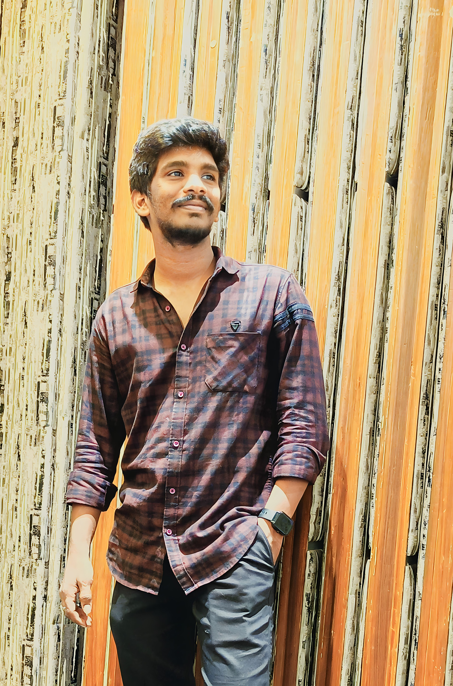

<section id="references">
    <div class="container mb-5">
        <mat-card>
            <mat-card-content>REFRENCES</mat-card-content>
          </mat-card>
        <span class="bar-title mb-5"></span>
        <div class="card shadow-lg  rounded pb-3" data-aos="fade-right" data-aos-delay="300" style="background-color:white;">
        <div class="row" style="margin-top: 10px;margin-left:10px ;">
            <div class="col-md-4 ">
                <div id="about" class="section">
                    <div class="container">
                     
                      <div class="image-container">
                        
                      </div>
                    </div>
                  </div>
            </div>
            <div class="col-md-8"> 

                <div class="reference">
                    <h2>Arun Kumar Pulapa</h2>
                    <p><strong>Title:</strong> Associate Software Engineer</p>
                    <p><strong>Company:</strong> ADQ Services</p>
                    <p><strong>Email:</strong> Pulapaarunaa@gmail.com</p>
                    <blockquote>
                        "I am a highly skilled frontend developer with expertise in Angular, React, and React Native. Ability to create elegant and responsive user interfaces is truly exceptional.Consistently delivers high-quality code and pays meticulous attention to detail, ensuring that every project works on is a success. 
                    
                        Proficiency in using Ionic to build cross-platform mobile applications and his expertise in Node.js and MySQL for backend development make him a versatile developer. I am a quick learner and adapts effortlessly to new technologies.
                    
                        Problem-solving skills and my dedication to delivering solutions that exceed client expectations.Commitment to continuous learning and staying updated with the latest frontend trends and best practices makes him an invaluable member of any development team."
                    </blockquote>
                </div>
    
              
            </div>
            <!-- <div class="col-md-3" >  </div>
            <div class="col-md-3" > </div> -->
        </div>
        </div>
    </div>
</section>